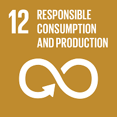

18 week course in Participatory Design at the Department of Computer and System Sciences, DSV, Stockholm University.
The goal was to develop a system related to the UN’s global goals through participatory design.
Throughout contextual inquiry, carried out remotely using zoom, some core topics for the system were identified. The contextual inquiry consisted of us as a project group interviewing and observing the participants engaged in their everyday activities for a couple of hours. This was done with our chosen UN goals as starting point and focus, and our target group that we after an initial brainstorm agreed on: young adults. Core topics, related to our two UN goals, identified concerned the reasons on which we make environmental friendly decisions:
• availability
• information
• price
• shame
• amusement
Below follows pictures of goals 12 and 13, “Responsible consumption and production” and “Climate action”. Find out more about all of the 17 global goals at https://www.globalgoals.org/
After elaborating on the needs and interests of the user group the idea of a game focused on how to learn mathematics was chosen. The goal was to involve as many senses as possible and to make it motivating to play, but also to not make it too komplex.
As a part of the development a couple of flow charts were made to get a better understanding of how the game could be constructed to fit the user group.
The final flowchart for the overall structure of the game.
The prototypes were made using Processing, a programming language used to code within the context of visual arts.
To enable the player to steer the game throughout tilting the device an additional application called GyrOSC was included in the development. This lets the players control one of the dynamic behaviours on their own, which motivates continued using and thereby further learning.
Dynamic behaviour in a game could be a factor of distraction, but on the same hand something that keeps the player interested. With that in mind it was decided that this game would make use of dynamic behaviour only in the form of rewards. In the first prototypes a "reward"-sound and a short animation was used as the reward when successfully catching a raindrop.
The first prototype, using stock photos only to get a hint of what the final UI would look like. This prototype included every technical implementation used in the final prototype, including the dynamic behaviour and the use of gyro to steer the bucket.
The user interface was created with the age of the target group in mind. The ambition was to illustrate a friendly and forgiving environment, with a simple layout adjusted to a kid to master on their own.
The first sketch of the friends appearing in the game.
The finalized friends.